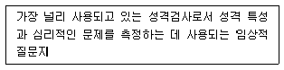
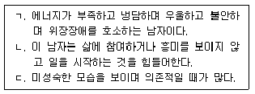
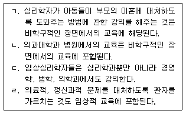
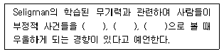
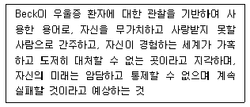
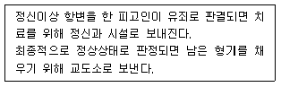
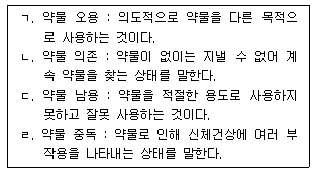
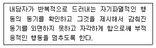
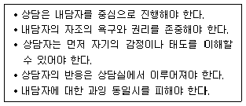
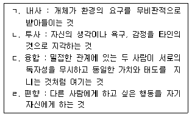

임상심리사-2급 (2020-06-06 기출문제)
1과목: 심리학개론
1. 기억의 왜곡을 줄이는 데 효과적인 방법으로 가장 거리가 먼 것은?
- 반복해서 학습하기
- 연합을 통한 인출단서의 확대
- 기억술 사용
- 간섭의 최대화
(정답률: 89%)

2. 설문조사에서 문항에 대한 응답을 「매우 찬성」에서 「매우 반대」까지 5개의 답지로 응답하게 만든 척도는?
- 리커트(Likert) 척도
- 써스톤(Thurstone) 척도
- 거트만(Guttman) 척도
- 어의변별(Semantic Differential) 척도
(정답률: 82%)
3. 최빈값에 관한 설명으로 옳지 않은 것은?
- 주어진 자료 중에서 가장 많이 나타나는 측정값이다.
- 최빈값은 대표성을 갖고 있다.
- 자료 중 가장 극단적인 값의 영향을 받는다.
- 중심경향성 기술값 중의 하나이다.
(정답률: 80%)
4. 기온에 따라 학습능률이 어떻게 달라지는가를 알아보기 위해 기온을 13℃, 18℃, 23℃인 세조건으로 만들고 학습능률은 단어의 기억력 점수로 측정하였다. 이 때 독립변수는 무엇인가?
- 기온
- 기억력 점수
- 학습능률
- 예언
(정답률: 84%)
5. 인간의 동조행동에 대한 설명으로 틀린 것은?
- 집단이 전문가로 이루어져 있을수록 동조행동은 커진다.
- 대체로 집단의 크기가 커질수록 동조행동은 줄어든다.
- 집단의 의견이나 행동의 만장일치가 깨지면 동조행동은 거의 나타나지 않는다.
- 비동조에의 동조(Conformity to Nonconformity)는 행위자의 과거행동에 일관되게 행동하려는 경향이다.
(정답률: 77%)
6. Küler-Ross가 주장한 죽음의 단계에 대한 순서로 옳은 것은?
- 부정 → 분노 → 타협 → 우울 → 수용
- 분노 → 우울 → 부정 → 타협 → 수용
- 우울 → 부정 → 분노 → 타협 → 수용
- 타협 → 부정 → 분노 → 우울 → 수용
(정답률: 77%)
7. 다음은 무엇에 관한 설명인가?

- 주제통각검사
- Rorschach 검사
- 다면적 인성검사
- 문장완성검사
(정답률: 85%)
8. 인본주의 성격이론에 대한 설명으로 옳은 것은?
- 무의식적 욕구나 동기를 강조한다.
- 대표적인 학자는 Bandura와 Watson이다.
- 외부 환경자극에 의해 행동이 결정된다고 본다.
- 개인의 성장 방향과 선택의 자유에 중점을 둔다.
(정답률: 85%)
9. 성격의 5요인 모델에 속하지 않는 것은?
- 개방성
- 성실성
- 외향성
- 창의성
(정답률: 77%)
10. 성격의 일반적인 특성과 가장 거리가 먼 것은?
- 독특성
- 안정성
- 일관성
- 적응성
(정답률: 61%)
11. 프로이트(Freud)의 성격체계에서 자아(Ego)의 역할이 아닌 것은?
- 중재역할
- 현실원칙
- 충동지연
- 도덕적가치
(정답률: 84%)
12. 다음 중 모집단의 표준편차를 적은 수의 표본자료에서 추정할 경우 사용하는 분포로 가장 적합한 것은?
- 정규분포
- t분포
- χ2 분포
- F분포
(정답률: 66%)
13. 효과적인 설득을 위해 고려해야 할 사항이 아닌 것은?
- 설득자가 설득행위가 일어난 상황에 주의를 기울일 필요가 있다.
- 설득자는 피설득자의 특질과 상태를 고려할 필요가 있다.
- 메시지의 강도가 중요하다.
- 설득자의 자아존중감이 무엇보다 중요하다.
(정답률: 84%)
14. 강화계획 중 유기체는 여전히 특정한 수의 반응을 행한 후에 강화를 받지만 그 숫자가 예측할 수 없게 변하는 것은?
- 고정비율 강화계획
- 변동비율 강화계획
- 고정간격 강화계획
- 변동간격 강화계획
(정답률: 71%)
15. 뉴런의 전기화학적 활동에 관한 설명으로 옳지 않은 것은?
- 뉴런은 자연적으로 전하를 띠는데, 이를 활동전위라고 한다.
- 안정전위는 뉴런의 세포막 안과 밖 사이의 전하 차이를 의미한다.
- 활동전위는 축색의 세포막 채널에 변화가 있을 경우 발생한다.
- 활동전위는 전치 쇼크가 일정 수준 즉, 역치에 도달할 때에만 발생한다.
(정답률: 50%)
16. Piaget가 발달심리학에 끼친 영향과 가장 거리가 먼 것은?
- 환경 속의 자극을 적극적으로 구축하는 가설-생성적인 개체로 아동을 보게 하였다.
- 인간 마음의 변화를 생득적-경험적이라는 두 대립된 시각으로 보는 데 큰 기여를 했다.
- 발달심리학에서 추구하는 학습이론이 구조와 규칙에 대한 심리학이 되는 데 그 기반을 제공했다.
- 발달심리학이 인간의 복잡한 지적능력의 변화를 탐색하는 분야가 되는 데 기여했다.
(정답률: 59%)
17. 로저스(Rogers)의 ‘자기 개념’에 관한 설명으로 옳지 않은 것은?
- 사람의 세상에 대한 지각에 영향을 준다.
- 상징화되지 못한 감정들로 구성되어 있다.
- 자기에는 지각된 자기 외에 되고 싶어 하는 자기도 포함된다.
- 지각된 경험에 의해 형성된다.
(정답률: 78%)
18. 장기기억의 특성에 관한 설명 중 옳지 않은 것은?
- 장기기억에서 주의를 기울인 정보는 다음 기억인 작업기억으로 전이된다.
- 장기기억의 정보는 일반적으로 의미에 따라서 부호화된다.
- 장기기억에서의 망각은 인출 실패에 따른 것이다.
- 장기기억의 몇몇 망각은 저장된 정보의 상실에 의해 일어난다.
(정답률: 69%)
19. 연합학습 이론에 대한 설명으로 틀린 것은?
- 고전적 조건형성 이론 : 능동적 차원의 행동변화
- 조작적 조건형성 이론 : 결과에 따른 행동변화
- 고전적 조건형성 이론 : 무조건 자극과 조건자극의 짝짓기 빈도, 시간적 근접성, 수반성 등이 중요
- 조작적 조건형성 이론 : 강화계획을 통해 행동출현 빈도의 조절 가능
(정답률: 73%)
20. 음식, 물과 같이 하나 이상의 보상과 연합되어 중립 자극 자체가 강화적 속성을 띠게 되는 현상은?
- 소거(Extinction)
- 자발적 회복(Spontaneous Recovery)
- 자극 일반화(Stimulus Generalization)
- 일반적 강화인(Generalized Reinforcer)
(정답률: 64%)
2과목: 이상심리학
21. 병적 도벽에 관한 설명으로 옳은 것은?
- 개인적으로 쓸모가 없거나 금전적으로 가치가 없는 물건을 훔치려는 충동을 저지하는 데 반복적으로 실패한다.
- 훔친 후에 고조되는 긴장감을 경험한다.
- 훔치기 전에 기쁨, 충족감, 안도감을 느낀다.
- 훔치는 행동이 품행장애로 더 잘 설명되는 경우에도 추가적으로 진단한다.
(정답률: 66%)
22. 주요 우울장애에 대한 설명으로 옳은 것은?
- 주요 우울장애의 유병률은 문화권에 관계없이 비슷하다.
- 주요 우울장애의 유병률은 60세 이상에서 가장 높다.
- 정신증적 증상이 나타나면 주요 우울장애로 진단할 수 없다.
- 생물학적 개입방법으로는 경두개자기자극법, 뇌심부자극 등이 있다.
(정답률: 50%)
23. 성격장애에 대한 설명으로 옳은 것은?
- 성격장애는 아동기, 청소년기에는 진단할 수 없다.
- 반사회성 성격장애의 경우 품행장애의 과거력이 있다면 연령과 상관없이 진단할 수 있다.
- 회피성 성격장애의 유병률은 여성에게서 더 높다.
- 경계성 성격장애의 유병률은 여성에게서 더 높다.
(정답률: 54%)
24. 자폐스펙트럼 장애의 진단에 특징적인 증상만으로 묶인 것은?
- 사회적-감정적 상호성의 결함, 관계 발전·유지 및 관계에 대한 이해의 결함, 상동증적이거나 반복적인 운동성 동작
- 구두 언어 발달의 지연, 비영양성 물질을 지속적으로 먹음, 상징적 놀이 발달의 지연
- 일반적인 의학적 상태, 타인과의 대화를 시작하거나 지속하는 능력의 현저한 장애, 발달수준에 적합한 친구관계 발달의 실패
- 동물에게 신체적으로 잔혹하게 대함, 반복적인 동작성 매너리즘(Mannerism), 다른 사람들과 자발적으로 기쁨을 나누지 못함
(정답률: 76%)
25. 이상심리학의 역사에 관한 설명으로 틀린 것은?
- Kraepelin은 현대 정신의학의 분류체계에 공헌한 바가 크다.
- 고대 원시사회에서는 정신병을 초자연적 현상으로 이해하였다.
- Hippocrates는 모든 질병은 그 원인이 마음에 있다고 하였다.
- 서양 중세에는 과학적 접근 대신 악마론적 입장이 성행하였다.
(정답률: 65%)
26. 우울장애의 원인에 관한 설명으로 옳은 것은?
- 신경전달물질인 노르에피네프린 및 세로토닌의 결핍과 관련이 있다.
- 갑상선 기능 항진과 관련된다.
- 코티졸 분비감소와 관련된다.
- 비타민 B1, B6엽산의 과다와 관련이 있다.
(정답률: 78%)
27. 환각제에 해당되는 약물은?
- 펜시클리딘
- 대마
- 카페인
- 오피오이드
(정답률: 53%)
28. 자기애성 성격장애에 대한 설명으로 틀린 것은?
- 과도한 숭배를 원한다.
- 자신의 중요성에 대해 과대한 느낌을 가진다.
- 자신의 방식에 따르지 않으면 일을 맡기지 않는다.
- 대인관계에서 착취적이다.
(정답률: 68%)
29. 주요우울장애와 양극성 장애의 비교설명으로 옳은 것은?
- 주요우울장애와 양극성 장애의 발병률은 비슷하다.
- 주요우울장애는 여자가 남자보다, 양극성 장애는 남자가 여자보다 높은 발병률을 보인다.
- 주요우울장애는 사회경제적으로 낮은 계층에서 발생비율이 높고, 양극성 장애는 높은 계층에서 더 많이 발견된다.
- 주요우울장애 환자는 성격적으로 자아가 약하고 의존적이며, 강박적인 사고를 보이는 경우가 많은 데 비해, 양극성 장애의 경우에는 병전 성격이 히스테리성 성격장애의 특징을 보인다.
(정답률: 47%)
30. 소인, 스트레스이론(Diathesis-Stress Theory)에 대한 설명으로 가장 적합한 것은?
- 소인은 생후 발생하는 생물학적 취약성을 의미한다.
- 스트레스가 소인을 변화시킨다.
- 소인과 스트레스는 서로 억제한다.
- 소인은 스트레스 상황에서 발현된다.
(정답률: 69%)
31. 알츠하이머병으로 인한 신경인지장애의 특성에 대한 설명으로 옳은 것은?
- 초기에는 일반적으로 오래된 과거에 관한 기억장애만을 가지고 있다.
- 인지 기능의 저하는 서서히 나타난다.
- 기질적 장애 없이 나타나는 정신병적 상태이다.
- 약물, 인지, 행동적 치료 성공률이 높은 편이다.
(정답률: 66%)
32. 다음 중 만성적인 알코올 중독자에게서 흔히 발생하는 것으로 비타민 B1(티아민) 결핍과 관련이 깊으며, 지남력 장애, 최근 및 과거 기억력의 상실, 작화증 등의 증상을 보이는 장애는?
- 혈관성 치매
- 코르사코프 증후군
- 진전 섬망
- 다운 증후군
(정답률: 63%)
33. 불안 증상을 중심으로 한 정신장애에 대한 설명으로 가장 거리가 먼 것은?
- 강박장애 : 원치 않는 생각이 침습적으로 경험되고, 이를 무시하거나 억압하려 하고, 중화시키려고 노력한다.
- 외상후스트레스장애 : 외상적 사건을 경험하고 난 후에 불안상태가 지속된다.
- 공황장애 : 갑자기 엄습하는 강렬한 불안, 즉 공황발작을 반복적으로 경험한다.
- 범불안장애 : 다른 사람들과 상호작용하는 사회적 상황을 두려워하여 회피한다.
(정답률: 68%)
34. DSM-5에서 변태성욕장애의 유형에 대한 설명으로 옳은 것은?
- 노출장애 : 다른 사람이 옷을 벗고 있는 모습을 몰래 훔쳐봄으로써 성적 흥분을 느끼는 경우
- 관음장애 : 동의하지 않는 사람에게 자신의 성기나 신체 일부를 반복적으로 나타내는 경우
- 소아성애장애 : 사춘기 이전의 아동을 대상으로 한 성적 활동을 통해 반복적이고 강렬한 성적 흥분이 성적 공상, 충동, 행동으로 발현되는 경우
- 성적가학장애 : 굴욕을 당하거나 매질을 당하거나 묶이는 등 고통을 당하는 행위를 중심으로 성적 흥분을 느끼거나 성적행위를 반복
(정답률: 72%)
35. 급식 및 섭식장애에 대한 설명으로 틀린 것은?
- 이식증은 아동기에서 가장 발병률이 높다.
- 되새김 증상은 다른 정신장애에서 발생하는 경우 심각성과 상관없이 추가적으로 진단할 수 있다.
- 신경성 폭식장애에서는 체중증가를 막기 위한 반복적이고 부적절한 보상행동이 나타난다.
- 신경성 식욕부진증의 유병률은 여성이 남성보다 높다.
(정답률: 60%)
36. 지적장애에 관한 설명으로 틀린 것은?
- 심각한 두부외상으로 인해 이전에 습득한 인지적 기술을 소실한 경우에는 지적장애와 신경인지장애로 진단할 수 있다.
- 경도의 지적장애는 여성보다 남성에게 더 많다.
- 지적장애는 개념적, 사회적, 실행적 영역에 대한 평가로 진단된다.
- 지적장애 개인의 지능지수는 오차 범위를 포함해서 대략 평균에서 1표준편차 이하로 평가 된다.
(정답률: 64%)
37. 조현병의 원인에 관한 설명으로 옳은 것은?
- 사회적 낙인 : 조현병 환자는 발병 후 도시에서 빈민거주지역으로 이동한다.
- 도파민(Dopamine) 가설 : 조현병의 발병이 도파민이라는 신경전달물질의 과다활동에 의해 유발된다.
- 사회선택이론 : 조현병이 냉정하고 지배적이며 갈등을 심어주는 어머니에 의해 유발된다.
- 표출정서 : 조현병이 뇌의 특정 영역의 구조적 손상에 의해 유발된다.
(정답률: 69%)
38. 신경성 식욕부진증에 관한 설명으로 틀린 것은?
- 폭식하거나 하제를 사용하는 경우는 해당하지 않는다.
- 체중과 체형이 자기평가에 지나치게 영향을 미친다.
- 말랐는데도 체중의 증가와 비만에 대한 극심한 두려움이 있다.
- 체중을 회복시키고 다른 합병증의 치료를 위해 입원치료가 필요한 경우도 있다.
(정답률: 78%)
39. 대형 화재현장에서 살아남은 남성이 불이 나는 장면에 극심하게 불안증상을 느낄 때 의심할 수 있는 가능성이 가장 높은 장애는?
- 외상후스트레스장애
- 적응장애
- 조현병
- 범불안장애
(정답률: 80%)
40. 섬망(Delirium) 증상의 특징이 아닌 것은?
- 주의를 기울이고 집중, 유지, 전환하는 능력의 감소
- 환경 또는 자신에 대한 지남력의 저하
- 증상은 오랜 기간에 걸쳐서 발생
- 오해, 착각 또는 환각을 포함하는 지각장애
(정답률: 65%)
3과목: 심리검사
41. 심리검사의 윤리적 문제에 대한 설명으로 옳지 않은 것은?
- 검사자들은 검사제작의 기술적 측면에만 관심을 가질 필요가 있다.
- 제대로 자격을 갖춘 검사자만이 검사를 사용해야 한다는 조건은 부당한 검사사용으로부터 피검자를 보호하기 위한 조치이다.
- 검사자는 규준, 신뢰도, 타당도 등에 관한 기술적 가치를 평가할 수 있어야 한다.
- 심리학자에게 면허와 자격에 관한 법을 시행하는 것은 직업적 윤리 기준을 세우기 위함이다.
(정답률: 78%)
42. MMPI-2의 재구성 임상척도 중 역기능적 부정 정서를 나타내며, 불안과 짜증 등을 경험하는 경우 상승하는 척도는?
- RC4
- RC1
- RC7
- RC9
(정답률: 55%)
43. 시각운동협응 및 시각적 단기기억, 계획성을 측정하며 운동(Motor)없이 순수하게 정보처리 속도를 측정하는 소검사는?
- 순서화
- 동형찾기
- 지우기
- 어휘
(정답률: 48%)
44. MMPI-2의 임상척도 중 0번 척도가 상승한 경우 나타나는 특징은?
- 외향적이다.
- 소극적이다.
- 자신감이넘친다.
- 관계를 맺는 데 능숙하다.
(정답률: 74%)
45. 표본에서 얻은 타당도 계수가 표집에 의한 우연요소에 의해 산출된 것이 아님을 확인하기 위해 필요한 것은?
- 추정의 표준오차
- 모집단의 표준편차
- 표본의 표준편차
- 표본의 평균
(정답률: 37%)
46. Wechsler 지능검사를 실시할 때 주의할 사항으로 옳은 것은?
- 피검자가 응답을 못하거나 당황하면 정답을 알려주는 것이 원칙이다.
- 모호하거나 이상하게 응답한 문항을 다시 질문하여 확인할 필요는 없다.
- 모든 검사에서 피검자가 응답할 수 있을 때까지 충분한 여유를 주어야 한다.
- 피검자의 반응을 기록할 때는 그대로 기록하는 것이 원칙이다.
(정답률: 72%)
47. BGT(Bender-Gestalt Test)에 관한 설명으로 옳지 않은 것은?
- 기질적 장애를 판별하려는 목적에서 만들어졌다.
- 언어적인 방어가 심한 환자에게 유용하다.
- 정서적 지수와 기질적 지수가 거의 중복되지 않는다.
- 통일된 채점체계가 없으며 전문가간의 불일치가 발생할 수 있다.
(정답률: 46%)
48. 다음 중 뇌손상으로 인해 기능이 떨어진 환자를 평가하고자 할 때 흔히 부딪힐 수 있는 환자의 문제와 가장 거리가 먼 것은?
- 시력장애
- 주의력 저하
- 동기저하
- 피로
(정답률: 57%)
49. K-WAIS-IV에서 일반능력지수(GAI)에 해당하지 않는 것은?
- 행렬추론
- 퍼즐
- 동형찾기
- 토막짜기
(정답률: 48%)
50. 원판 MMPI의 타당도 척도가 아닌 것은?
- L척도
- F척도
- K척도
- S척도
(정답률: 57%)
51. Rorschach 검사에서 지각된 스트레스와 관련된 구조변인이 아닌 것은?
- M
- FM
- C
- Y
(정답률: 33%)
52. 지능에 대한 설명으로 옳지 않은 것은?
- 비네(A.Binet)는 정신연령(Mental Age)이라는 용어를 사용하였다.
- 지능이란 인지적, 지적 기능의 특성을 나타내는 불변개념이다.
- 새로운 환경 및 다양한 상황을 다루는 적응과 순응에 관한 능력이다.
- 결정화된 지능은 문화적, 교육적 경험에 따라 영향을 받는다.
(정답률: 63%)
53. 집중력과 정신적 추적능력(Mental Tracking)을 측정하는 데 사용되는 신경심리검사는?
- Bender Gestalt Test
- Rey Complex Figure Test
- Trail Making Test
- Wisconsin Card Sorting Test
(정답률: 58%)
54. Sacks의 문장완성검사(SSCT)에서 4가지 영역에 속하지 않는 것은?
- 가족 영역
- 대인관계 영역
- 자기개념 영역
- 성취욕구 영역
(정답률: 67%)
55. 정신지체가 의심되는 6세 6개월 된 아동의 지능검사로 가장 적합한 것은?
- H-T-P
- BGT-2
- K-WAIS-4
- K-WPPSI
(정답률: 67%)
56. 검사-재검사 신뢰도에 관한 설명으로 옳지 않은 것은?
- 검사 사이의 시간 간격이 너무 길면 측정대상의 속성이나 특성이 변할 가능성이 있다.
- 반응민감성에 의해 검사를 치르는 경험이 개인의 진점수를 변화시킬 가능성이 있다.
- 감각식별검사나 운동검사에 권장되는 방법이다.
- 검사 사이의 시간간격이 짧으면 이월효과가 작아진다.
(정답률: 67%)
57. 다음 MMPI 검사의 사례를 모두 포함하는 코드 유형은?

- 2-3/3-2
- 3-4/4-3
- 2-7/7-2
- 1-8/8-1
(정답률: 51%)
58. 연령이 69세인 노인환자의 신경심리학적 평가에 적합하지 않은 검사는?
- SNSB
- K-VMI-6
- Rorschach 검사
- K-WAIS-IV
(정답률: 48%)
59. 심리검사 점수의 해석과 사용에서 임상심리사가 유의해야 할 점이 아닌 것은?
- 검사는 개인의 일정 시점에서 무엇을 할 수 있는지를 밝혀내도록 고안된 것이다.
- 검사 점수를 해석할 때는 그 사람의 배경이나 수행동기 등을 배제해야 한다.
- 문화적 박탈 효과에 둔감한 검사는 문화적 불이익의 효과를 은폐시킬 수 있다.
- IQ점수를 범주화하여 해석하는 것은 오류 가능성이 있다.
(정답률: 73%)
60. 기억검사로 분류되지 않는 것은?
- K-BNT
- Rey-Kim Test
- ReyComplex Figure Test
- WMS
(정답률: 41%)
4과목: 임상심리학
61. 자신의 초기 경험이 타인에 대한 확장된 인식과 관계를 맺는다는 가정을 강조하는 치료적 접근은?
- 대상관계이론
- 자기심리학
- 심리사회적 발달이론
- 인본주의
(정답률: 68%)
62. 임상심리사의 역할 중 교육에 관한 설명으로 옳은 것을 모두 고른 것은?

- ㄱ, ㄴ, ㄷ
- ㄱ, ㄴ, ㄹ
- ㄱ, ㄷ, ㄹ
- ㄴ, ㄷ, ㄹ
(정답률: 65%)
63. 다음 ( )에 알맞은 것은?

- 내부적, 안정적, 일반적
- 내부적, 불안정적, 특수적
- 외부적, 안정적, 일반적
- 외부적, 불안정적, 특수적
(정답률: 62%)
64. 수업시간에 가만히 자리에 앉아 있지 못하고 돌아다니며, 급우들의 물건을 함부로 만져 왕따를 당하고 있는 초등학교 3학년 10세 지적장애 남아의 문제행동을 도울 수 있는 가장 권장되는 행동치료법은?
- 노출치료
- 체계적 둔감화
- 유관성 관리
- 혐오치료
(정답률: 62%)
65. 현재 임상장면에서 많이 사용되는 심리평가 도구들 중 가장 먼저 개발된 검사는?
- 다면적 인성검사
- Strong 직업흥미검사
- Rorschach 검사
- 주제통각검사
(정답률: 52%)
66. 다음은 무엇에 관한 설명인가?

- 부정적 사고(Negative Thought)
- 인지적 삼제(Cognitive Triad)
- 비합리적 신념(Irrational Belief)
- 인지오류(Cognitive Error)
(정답률: 58%)
67. 프로그램의 주요 초점은 사회 복귀이며, 직업능력 증진부터 내담자의 자기개념 증진에 걸쳐 있는 것은?
- 일차 예방
- 이차 예방
- 삼차 예방
- 보편적 예방
(정답률: 47%)
68. 통제된 관찰에 관한 설명으로 적합하지 않은 것은?
- 스트레스 면접은 통제된 관찰의 한 유형이다.
- 자기-탐지 기법은 통제된 관찰의 한 유형이다.
- 역할시연은 가장 일반적으로 사용되는 통제된 관찰 유형이다.
- 모의실험 방식에서 관심행동이 나타나도록 하는 유형이다.
(정답률: 60%)
69. 주의력 결핍 과잉행동장애(ADHD)는 뇌와 행동과의 관계에서 볼 때 어떤 부위의 결함을 시사하는가?
- 전두엽의 손상
- 측두엽의 손상
- 변연계의 손상
- 해마의 손상
(정답률: 63%)
70. 치료 매뉴얼을 바탕으로 하며 내담자의 특성이 명확하게 기술된 대상에게 경험적으로 타당화된 치료를 실시할 때 증거가 잘 확립된 치료에 대한 기준에 해당하지 않는 것은?
- 서로 다른 연구자들이 시행한 두 개 이상의 집단설계 연구로서 위약 혹은 다른 치료에 비해 우수한 효능을 보이는 경우
- 두 개 이상의 연구가 대기자들과 비교해 더 우수한 효능을 보이는 경우
- 많은 일련의 단일사례 설계연구로서 엄정한 실험설계 및 다른 치료와 비교하여 우수한 효능을 보이는 경우
- 서로 다른 연구자들이 시행한 두 개 이상의 집단설계 연구로서 이미 적절한 통계적 검증력(집단당 30명 이상)을 가진 치료와 동등한 효능을 보이는 경우
(정답률: 46%)
71. 행동관찰에 대한 설명으로 틀린 것은?
- 면접을 통해서 얻어진 정보에 비해서 의도적 또는 비의도적으로 왜곡될 가능성이 더 적다.
- 연구자 스스로 관심을 가지고 있는 문제를 볼 수 있는 기회를 제공해준다.
- 표적행동을 분명하게 정의하기 위하여 조작적 정의를 개발하는 것이 필요하다.
- 외현적 -운동 행동뿐만 아니라 인지와 정서적 상태에 대한 정보를 풍부하게 얻을 수 있다.
(정답률: 53%)
72. 초기 접수면접에 관한 설명과 가장 거리가 먼 것은?
- 환자가 미래의 문제들을 잘 다룰 수 있는지에 초점을 맞춰야 한다.
- 내원 사유를 정확히 파악해야 한다.
- 기관의 서비스가 환자의 필요와 기대에 부응하는지 판단해야 한다.
- 치료에 대해 가질 수 있는 비현실적 기대를 줄여 줄 수 있어야 한다.
(정답률: 65%)
73. 골수 이식을 받아야 하는 아동에게 불안과 고통에 대처하도록 돕기 위하여 교육용 비디오를 보게 하는 치료법은?
- 유관관리 기법
- 역조건형성
- 행동시연을 통한 노출
- 모델링
(정답률: 50%)
74. 다음은 무엇에 관한 설명인가?

- M’Naghten 원칙
- GBMI 평결
- Durham 기준
- ALI 기준
(정답률: 48%)
75. 아동기에 기원을 둔 무의식적인 심리적 갈등에서 이상행동이 비롯된다고 가정한 조망은?
- 행동적 조망
- 인지적 조망
- 대인관계적 조망
- 정신역동적 조망
(정답률: 78%)
76. 임상적 면접에서 사용되는 바람직한 의사소통 기술에 해당되는 것은?
- 면접자 자신의 사적인 이야기를 꺼내는 데 주저하지 않는다.
- 침묵이 길어지지 않게 하기 위해 면접자는 즉각 개입할 준비를 한다.
- 환자가 의도한대로 단어들을 이해하기 위해 노력한다.
- 내담자의 감정보다는 얻고자 하는 정보에 주목한다.
(정답률: 65%)
77. 임상심리학자의 법적, 윤리적 책임에 관한 설명으로 틀린 것은?
- 임상심리학자의 직업수행에는 공적인 책임이 따른다.
- 어떠한 경우에도 내담자의 비밀은 보장해야 한다.
- 내담자 사생활의 부당한 침해를 방지하기 위해 노력해야 한다.
- 내담자, 피감독자, 학생, 연구 참여자들을 성적으로 악용해서는 안 된다.
(정답률: 73%)
78. Rorschach 검사에서 반응위치를 부호화할 때 단독으로 기록할 수 없는 것은?
- S
- D
- Dd
- W
(정답률: 40%)
79. Rorschach 검사의 모든 반응이 왜곡된 형태를 근거로 한 반응이고, MMPI에서 8번 척도가 65T정도로 상승되어 있는 내담자에 대한 설명으로 가장 적합한 것은?
- 우울한 기분, 무기력한 증상이 주요 문제일 가능성이 있다.
- 주의집중과 판단력이 저하되어 있을 가능성이 있다.
- 합리화나 주지화를 통해 성공적인 방어기제를 작동시킬 가능성이 있다.
- 회피성 성격장애의 특징을 보일 가능성이 있다.
(정답률: 53%)
80. 기억력 손상을 측정하는 검사가 아닌 것은?
- Wechsler Memory Scale
- Benton Visual Retention Test
- Rey Complex Figure Test
- Wisconcin Card Sorting Test
(정답률: 47%)
5과목: 심리상담
81. 벌을 통한 행동수정 시 유의해야 할 사항이 아닌 것은?
- 벌을 받을 행동을 구체적으로 세분화하고 설명한다.
- 벌을 받을 상황을 가능한 한 없애도록 노력한다.
- 벌은 그 강도를 점차로 높여가야 한다.
- 벌을 받을 행동이 일어난 직후에 즉각적으로 벌을 준다.
(정답률: 65%)
82. 청소년의 권리 및 책임, 청소년육성정책에 관한 기본적인 사항을 규정한 청소년기본법의 제정 시기는?
- 1960년대
- 1970년대
- 1980년대
- 1990년대
(정답률: 45%)
83. 약물에 관한 설명으로 옳은 것을 모두 고른 것은?

- ㄱ, ㄴ
- ㄴ, ㄹ
- ㄷ, ㄹ
- ㄱ, ㄹ
(정답률: 59%)
84. 집단상담에서 상대방의 행동이 나에게 어떤 반응을 일으키는가에 대하여 상대방에게 직접이야기해주는 개입방법은?
- 자기투입과 참여
- 새로운 행동의 실험
- 피드백 주고받기
- 행동의 모범을 보이기
(정답률: 72%)
85. 청소년비행 중 우발적이고 기회적이어서 일단 발생하면 반복되고 습관화되어 다른 비행행동과 복합되어 나타날 수 있는 것은?
- 약물 사용
- 인터넷중독
- 폭력
- 도벽
(정답률: 60%)
86. 진로상담에서 “하고 싶은 일이 너무 많아요.”라고 호소하는 내담자에게 가장 먼저 개입해야하는 방법은?
- 자기 이해
- 직업정보 탐색
- 진학정보 탐색
- 진로 의사결정
(정답률: 67%)
87. 교류분석상담에서 성격이나 일련의 교류들을 자아상태 모델의 관점에서 분석하는 것은?
- 구조분석
- 기능분석
- 게임분석
- 각본분석
(정답률: 65%)
88. 미국심리학회(APA)와 미국상담학회(ACA)에서 제시한 전문적 심리상담자의 기본적인 도덕 원칙에 해당하지 않는 것은?
- 자율성(Autonomy)
- 명확성(Clarity)
- 성실성(Fidelity)
- 덕행(Beneficence)
(정답률: 42%)
89. 정신분석적 상담에서 내적 위험으로부터 아이를 보호하고 안정시켜주는 어머니의 역할을 모델로 한 분석기법은?
- 버텨주기(Holding)
- 역전이(Cocunter Transference)
- 현실검증(Reality Testing)
- 해석(Interpretation)
(정답률: 78%)
90. 다음 설명에 해당하는 상담기법은?

- 즉시성
- 단추 누르기
- 수프에 침 뱉기
- 악동 피하기
(정답률: 58%)
91. 트라우마 체계 치료(TST)의 원리에 대한 설명으로 옳지 않은 것은?
- 무너진 체계를 조정하고 복원하기
- 현실에 맞추기
- 최대한의 자원으로 작업하기
- 강점으로 시작하기
(정답률: 52%)
92. 성문제 상담에서 상담자가 지켜야 할 일반적 지침으로 옳지 않은 것은?
- 상담자는 성에 대한 자신의 태도를 자각하고 있어야 한다.
- 내담자가 성에 대한 올바른 지식을 가지고 있음을 전제로 상담을 시작한다.
- 상담 중 내담자와 성에 관하여 개방적인 의사소통을 한다.
- 자신의 한계를 넘어서는 문제는 다른 전문가에게 의뢰한다.
(정답률: 70%)
93. 로저스(Rogers)가 제안한 ‘충분히 기능하는 사람’의 특성과 가장 거리가 먼 것은?
- 창조적이다.
- 제약없이 자유롭다.
- 자신의 유기체를 신뢰한다.
- 현재보다는 미래에 투자할 줄 안다.
(정답률: 68%)
94. 다음 내용에 해당하는 상담의 기본원리는?

- 개별화의 원리
- 무비판적인 태도의 원리
- 자기결정의 원리
- 수용의 원리
(정답률: 49%)
95. 약물남용 청소년의 진단 및 평가에 있어서 상담자가 유의해야 할 사항으로 옳지 않은 것은?
- 청소년이 약물을 사용한 경험이 있다는 것만으로 약물 남용자로 낙인찍지 않도록 한다.
- 청소년 약물 남용과 관련해서 임상적으로 이중진단의 가능성이 높은 심리적 장애는 우울증, 품행장애, 주의력 결핍 과잉행동장애, 자살 등이 있다.
- 청소년 약물 남용자들은 약물사용 동기나 형태, 신체적 결과 등에서 성인과 다른 양상을 보이므로 DSM-V와 같은 성인 위주 진단체계의 적용에 한계가 있다.
- 가족문제나 학교 부적응 등의 관련 요인들의 영향으로 인한 일차적인 약물 남용의 문제를 보이는 경우, 상담의 목표도 이에 따라야 한다.
(정답률: 48%)
96. REBT 상담에 대한 설명으로 옳지 않은 것은?
- 내담자의 비합리적 신념을 발견하고 규명한다.
- 내담자의 무의식을 의식화하고 자아를 강화시킨다.
- 주요한 상담기술로 인지적 재구성, 스트레스 면역 등이 있다.
- 합리적 행동 반응을 개발, 촉진하기 위한 행동연습을 실시한다.
(정답률: 70%)
97. 게슈탈트 치료의 접촉경계 장애에 관한 설명으로 옳은 것을 모두 고른 것은?

- ㄱ, ㄴ
- ㄱ, ㄴ, ㄷ
- ㄴ, ㄷ, ㄹ
- ㄱ, ㄴ, ㄷ, ㄹ
(정답률: 58%)
98. 가족상담의 기본적인 원리와 가장 거리가 먼 것은?
- 가족체제의 문제성을 이해하도록 한다.
- 자녀행동과 부모관계를 파악한다.
- 감정노출보다는 생산적 이해에 초점을 둔다.
- 현재보다 과거 상황에 초점을 둔다.
(정답률: 65%)
99. 상담 종결에 관한 설명으로 옳지 않은 것은?
- 상담목표가 달성되지 않아도 상담을 종결할 수 있다.
- 상담의 진행결과가 성공적이었거나 실패했을 때에 이루어진다.
- 조기종결 시 상담자는 조기종결에 따른 내담자의 감정을 다뤄야 한다.
- 조기종결 시 상담자가 내담자에게 조기종결에 따른 솔직한 감정을 표현하는 것은 도움이 되지 않는다.
(정답률: 72%)
100. 와이너(Weiner)의 비행분류에 관한 설명으로 옳지 않은 것은?
- 비행자의 심리적인 특징에 따라 사회적 비행과 심리적 비행을 구분한다.
- 심리적 비행에는 성격적 비행, 신경증적 비행, 정신병적(기질적) 비행이 있다.
- 신경증적 비행은 행위자가 타인의 주목을 끌 수 있는 방식으로 비행을 저지르는 경우가 많다.
- 소속된 비행하위집단 내에서 통용되는 삶의 방식들은 자존감과 소속감을 가져다주므로 장기적으로 적응적이라고 할 수 있다.
(정답률: 65%)